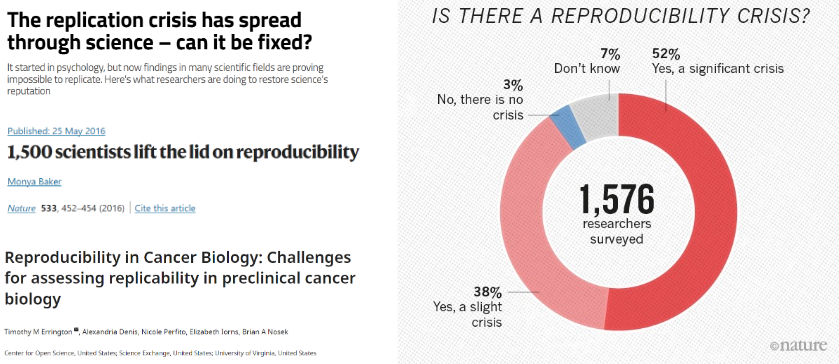
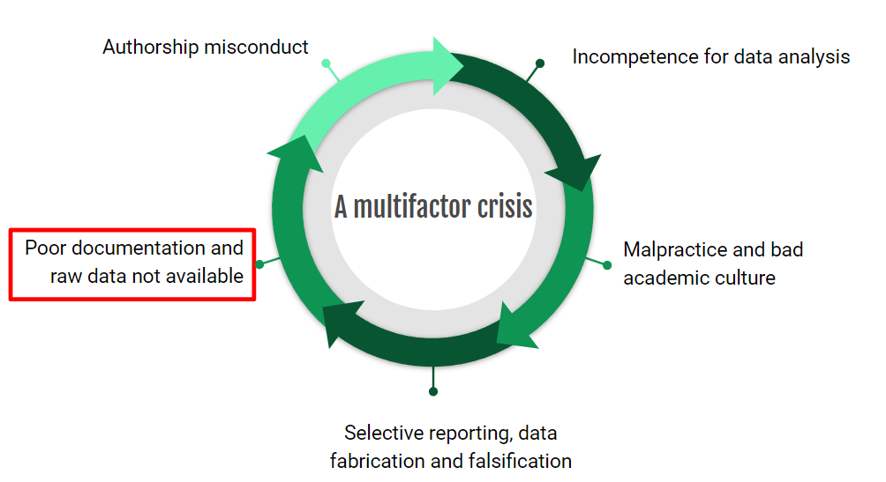
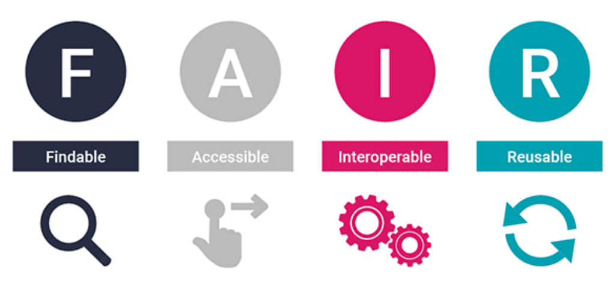
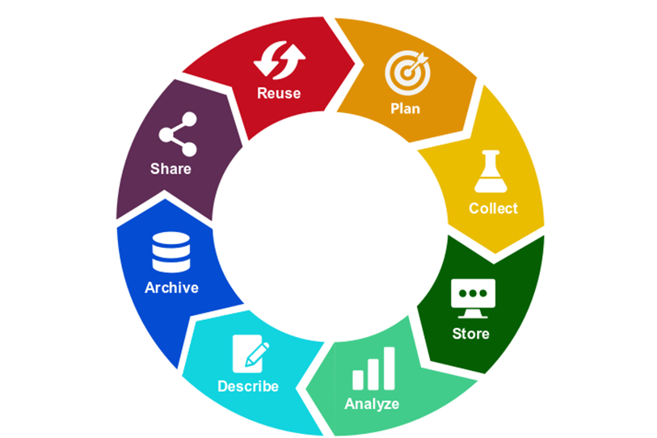
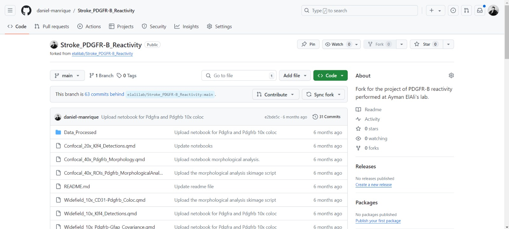
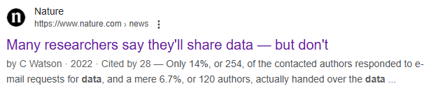
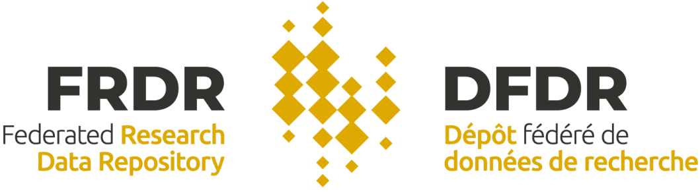

Introduction to Research Data Management (RMD)
A primer for researchers
Digital Research Alliance of Canada
Wednesday, December 11, 2024
Contextualizaing Research Data Management (RDM)
Agenda
Contextualizaing Research Data Management (RDM)
Understanding RDM
Research project life cycle
Data as the new oil
Why “bother” with RDM?
Data is the foundation of scientific research. We want to best manage this source for modeling, workflow automation, quality control, and data sharing with our field to produce meaningful scientific work.
The 80/20 rule
Researchers spend 80% of their time finding, producing, cleaning, and organizing data.
We want our research de be reproducile

Some well-known causes

Creating reproducible science
Document data provenance (samples, software, instruments, other tools).
Define standard procedures and methods (i.e., how measurements were made).
Quality control measures (data evaluation, organization and cleaning).
Comprehensive documentation to enable understanding and reuse of data.
Therefore, research needs to move towards
Competent researchers in RDM and data analysis.
Standardized approaches to sharing raw data and analysis code to support research findings.
Researchers with a commitment to transparency and best scientific practice practices to ensure research integrity.
RDM competences
Think of RDM competencies as a matter of professional responsibility, ethical conduct, and commitment to best scientific practices.
Tri-Agency Research Data Management Policy
The Goverment of Canada promotes RDM in its Tri-Agency Research Data Management Policy.
Through its federal funding agencies, the the Government of Canada seeks to implement data management plans (DMPs) and sharing of research data to maximize the benefits to society.
We can define RDM as:
RDM encompasses the organization/handling, storage, sharing and preservation of research data, including physical objects/files, documents, images, audio, digital databases, etc.
Understanding RDM
Agenda
Contextualizaing Research Data Management (RDM)
Understanding RDM
Research project life cycle
Data as the new oil
Where does data end up?
Considerations for storing data
In most cases, data must be retained for 10 years.
What do we need to store?
What data formats provide access?
What technical requirements do I need?
How secure is the data and how can I access it?
Tip
These are all aspects of good scientific practice!
What research data we need/could store?
Experimental samples (physical samples and files, and the methods for generating them).
Scientific instruments (model, version, setup).
Experimental data (raw and processed data, plots, tables and figures).
Code and analysis pipelines (processing and analysis workflows, software and libraries, machine learning classifiers, statistical models).

Findable: Data with identifiers and metadata that facilitate its discovery.
Accessible: To the community and research under clear permissions (i.e Creative Commons Licenses).
Interoperable: Data conforming to specific standards (i.e. standardized vocabularies) and formats (i.e. CSV, TIFF).
Reusable: Data sufficiently described (and licensed) to allow reuse by interested parties.
Tip
Additional information and guidelines can be found here
Research project life cycle
Agenda
Contextualizaing Research Data Management (RDM)
Understanding RDM
Research project life cycle
Data as the new oil
Research project life cycle

Planning phase
Planning includes clear perspectives on how researchers will manage, store, and share their data. This step may include:
Identify data needs: Determine what type of data is needed or available to answer the research question.
Create a Data Management Plan (DMP): Outline how data will be collected, documented, and preserved, file formats, appropriate metadata standards, and long-term data sharing and preservation.
DMP assistants
The DMP Assistant from the Digital Research Alliance of Canada is an example of a DMP tool.
Ethical considerations: Address any ethical requirements related to the data privacy, consent, and security.
Collection phase
Researchers focus on collecting research data from:
Experiments: laboratory procedures or clinical trials.
Fieldwork: population surveys or environmental measurements.
Existing datasets: secondary data from repositories or historical archives).
Consider:
- Standards for data collection.
- Technical elements (what data is stored and how).
- Adequate documentation and relevant metadata.
Storing phase
Properly store research data to prevent loss, corruption, or unauthorized access. Some best practices include:
Systematic backups: Having multiple copies of the data in multiple physical and digital locations.
Security: Sensitive data must be protected from unauthorized access by encrypting files or restricting access to authorized personnel.
File organization: Appropriate and consistent naming conventions to facilitate the location and understanding of records.
Active RDM platforms
Consider using active data management platforms suah as the Open Science Framework (OSF) or OpenBis.

Analyze phase
Analyzing data to draw scientific conclusions. This may include:
Data cleaning: Using reproducible workflows to handle and clean data, removing possible errors, duplicates, and inconsistencies.
Statistical analysis: Use theoretically motivated statistical models to make scientific inference and identify patterns or relationships in the data.
Visualization: Create visualizations to present scientific results.
Partners to handle analysis workflows
R-studio/Quarto (R + Python)

GitHub (Version control)

With R-studio (R and Python) you can
R-studio/Quarto (R + Python)
Handle data tables and variables using the R Tidyverse.
Analyze images using Python skimage.
Process Flow cytometry files/data using R FlowCore from BioConductor.
Analyze RNS-seq data using R DESeq2 from BioConductor.
Do state-of-the-art statistical modeling using brms.
And anything else you can think of…
Description phase
Document the content of the dataset to make it easier to understand and reuse. This comprises the generation of a readme file containing Metadata schemes (information about the data).

There are templates/resources to guide the generation of readme files:
FRDR readme file template.
Contents of a readme file
In general, a dataset readme file shows:
Dataset identifier showing information such as title, authors, data collection date, geographic information.
A map of files/folders defining the contents and hierarchy of folders and subfolders, along with naming conventions.
Methodological information presenting methods for data collection/generation, analysis, and experimental conditions.
A set of instructions and software for opening, handling and reproducing research and analysis workflows.
Sharing and access information detailing permissions and terms of use.
Caution
A dataset is a standalone object. Methodological information MUST NOT be relegated to associated research articles.
Archiving and Sharing Phase
Archiving and sharing research data involves its long-term preservation in trusted data repositories, ensuring that the data are:
Accessible: Data is findable and accessible for reuse.
Preserved: To prevent data loss due to software or hardware obsolescence. Repositories have systematic process to ensure that data is always accessible.
Licensed: to define how others can use the data.
Cited: with a DOI or other associated unique identifier.
We can do better science
Data availability statement
“The raw data supporting the conclusions of this article will be made available by the authors, without undue reservation.”

Tip
We need to be more aware of our responsibilities and duties as scientists!
Sharing data (in repositories)
When you share data, make sure that it meets these characteristics:
Folders and files are organized in a structured way: Use standardized file formats (e.g., CSV, TIFF) and check for consistency in naming conventions.
The metadata/readme allow the dataset to be understood as a standalone object, providing collection methods, processing steps, and relevant context.
It is desirable that it contains reproducible workflows used to process and generate the research results.
Be aware that datasets are research elements that serve the public and the scientific community, and that can be used (and cited) independently of a research article.
Why not?
Think of research articles as additions to your dataset!
Reuse
Researchers and the public can reuse data to:
Avoid unnecessary or costly experiments by using previous research results.
Validate research findings: Independent verification of scientific results and conclusions (by replicating research workflows).
Repurpose data: Use the data for new research questions or in combination with other datasets. They are also extremely valuable as educational resources.
Build upon previous work: to accelerate scientific discovery and meta-analysis by avoiding duplication of efforts or reliance on irreproducible research.
Data as the new oil
Agenda
Contextualizaing Research Data Management (RDM)
Understanding RDM
Research project life cycle
Data as the new oil
Data is a valuable resource
Simulation-based approaches, machine learning and artificial intelligence.
Build workflows based on existing data and pipelines.
Share and reuse data with the scientific community to build collaborations.
How do we get there?
- FAIR data: Making our data useful to others.
- Adequate and comprehensive documentation that contextualizes and describes our data.
- Sharing reproducible workflows that ensure the reproducibility of results (protocols, open file formats, analysis workflows).
- Incorporate an open science culture into research environments, focusing on transparent reporting of research results and open data sharing.
Find more supporting material
- FRDR guide for deposit research data.
- Guidance on depositing existing data in public repositories
- RDMkit


Introduction to Research Data Management (RMD) - Daniel Manrique-Castano, Ph.D